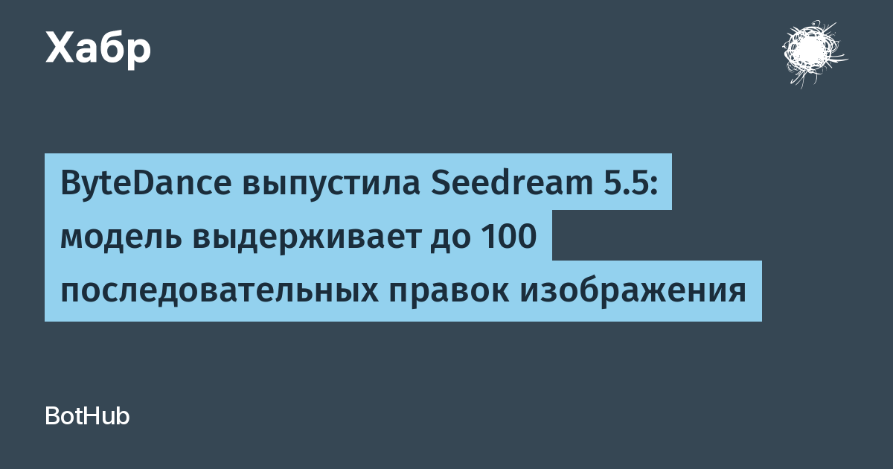

Главная фишка Seedream 5.5 — многораундовое редактирование. Обычно каждая следующая правка идёт «по выходу предыдущей», и мелкие ошибки накапливаются: детали плывут, цвета незаметно уезжают, картинка выцветает. ByteDance утверждает, что обучила модель сохранять неизменяемые области на уровне пикселей — без сдвигов цвета и деградации. В официальном демо один и тот же портрет правили 100 раз подряд (одежда, аксессуары, предметы на столе), и модель по-прежнему точно редактирует кольца и оправу очков, корректно обращаясь с позой, перекрытиями и светом.
Вторая новость для дизайнеров: модель нативно выдаёт RGBA-изображения с альфа-каналом — сплошную и частичную прозрачность, аккуратно прорисовывая края объектов. Это значит, что сгенерированный элемент можно сразу уносить в макет как самостоятельный ассет, минуя вырезание фона и чистку контуров. Третий блок улучшений — фотореализм (свет, материалы, текстура кожи без лишного «глянца» и пересветов) и рендеринг текста: сложные глифы и плотно набранный мелкий текст стали заметно точнее.
В блоге команды Seed говорится о «существенном» приросте общих метрик над предыдущей версией и о результатах на уровне лидеров среди крупных моделей по качеству текстовой структуры и реализма text-to-image. Тестовых таблиц и бенчмарков публично пока не показали, так что цифры — из официальных заявлений самой ByteDance, и относиться к ним стоит как к маркетинговой рамке до независимых замеров.
Seedream 5.5 — явный разворот от «сгенерируй красивую картинку» к «работай в производственном конвейере». Устойчивое многораундовое редактирование и нативная прозрачность закрывают две главные боли коммерческой иллюстрации: бесконечные правки по ТЗ и ручную вырезку ассетов. Для рынка это сигнал, что конкурентная гонка image-моделей переехала из плоскости «кто красивее» в плоскость «кто предсказуемее».